Tanta
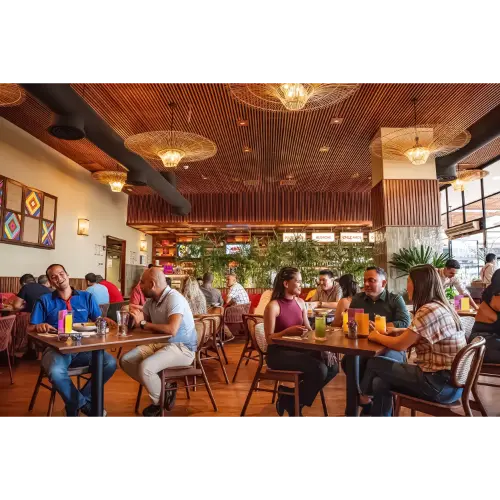
Great if you're visiting and want to try Peruvian food or just a solid criollo dish. The Larcomar location has ocean views, but every branch cooks well. Go solo or with friends, and don't skip the ice-cold chicha morada.
I love a good chat with friends, reading, working, or studying while I enjoy a great drink, a light breakfast or lunch, or a dessert! So I put together a roundup of the prettiest, most accessible cafés in Lima, sorted by what you're in the mood for.

Great if you're visiting and want to try Peruvian food or just a solid criollo dish. The Larcomar location has ocean views, but every branch cooks well. Go solo or with friends, and don't skip the ice-cold chicha morada.
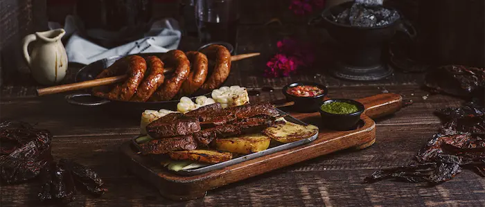
Top-tier criollo food, every dish is a delight. Go with a reservation — it's perfect for a birthday or any special occasion.
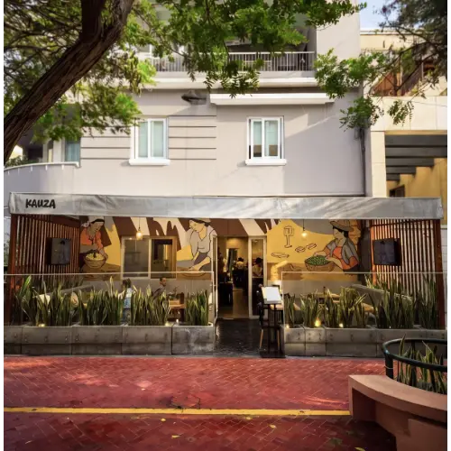
Great variety of causas, with a potato cake and delicious sides. I recommend the seafood rice and the causa anticuchera. Go early, it fills up fast.
Solo or with friends, celebrating or not, these are my go-tos.
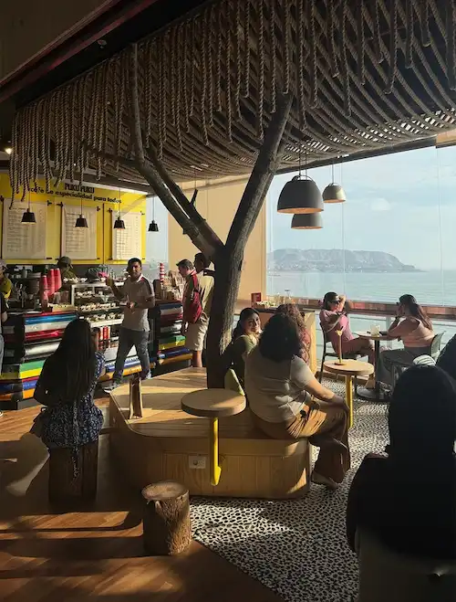
Delicious drinks, hot or cold, and light sandwiches. The blueberry cake is my favorite. They have several locations — look for one with seating, since some are grab-and-go.
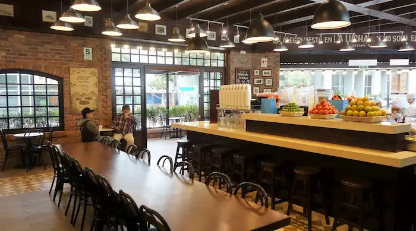
The best sandwiches you'll try, with artisan fries as the perfect side. It's fast-moving and a bit loud — great for a tasty local breakfast, not so much for lingering.
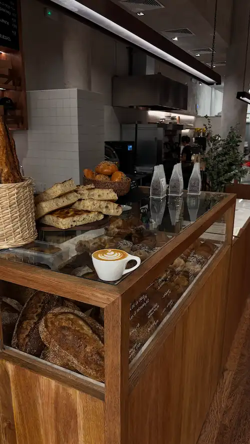
Sourdough bread and delicious pastries. Perfect if you're on your own and want a calm spot to chat or work remotely. Don't miss the cheese sandwich and the berry muffin.
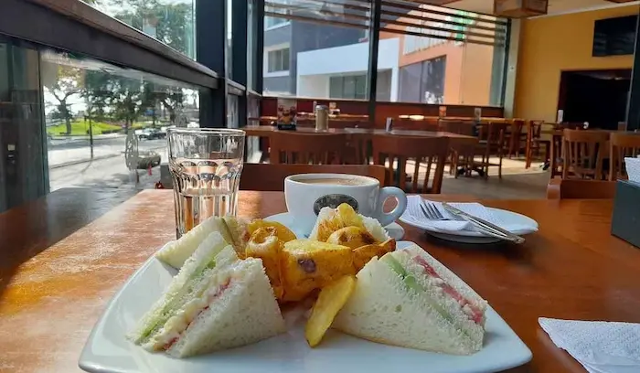
A varied menu — you can have breakfast and even lunch here. Great for a business meeting, with friends, or solo.
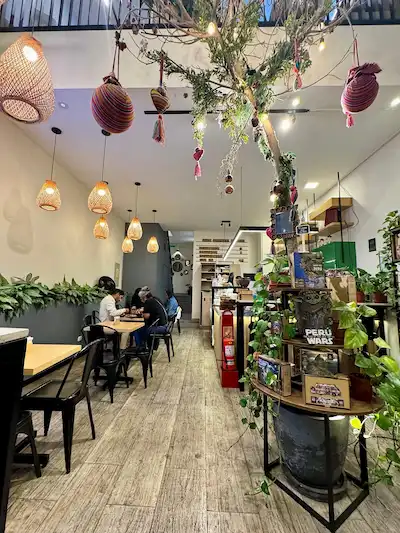
The perfect spot if you're with friends or your partner and want a little distraction: they give you a puzzle to put together while you wait. The carrot cake is a must.
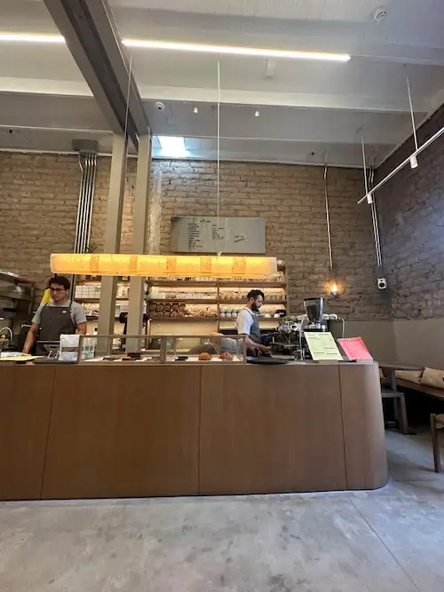
I love all their pastries. I wouldn't recommend staying long since it's small and the seating is a bit uncomfortable, but the vibe is really cozy.
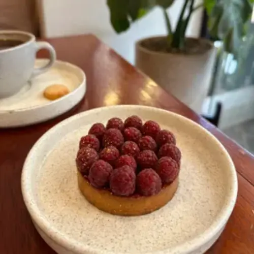
Highly recommended if you want something light or love good bread. It's small and cozy — great if you're just passing through. My favorites: the canelé and the cheese-and-blackberry croissant.
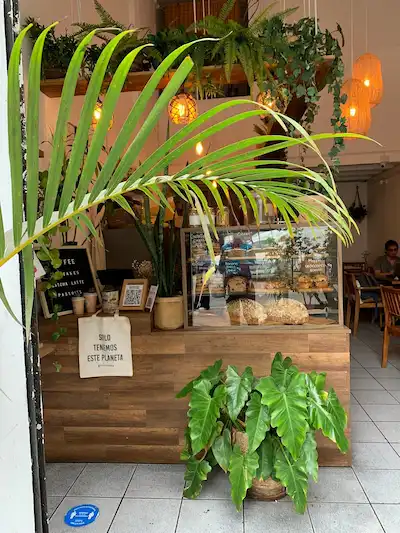
Ideal for a brunch with friends. The space is small but cozy. My favorite: the chocolate chip cookie.
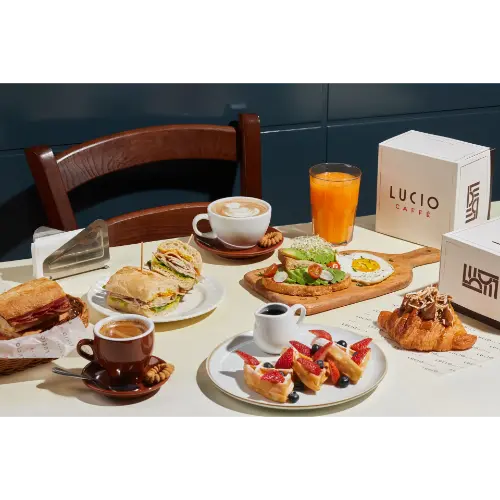
Great for a light breakfast or lunch. Perfect if you're in a group, since their locations have plenty of space.
These spots are super lovely and I go whenever I need something specific.
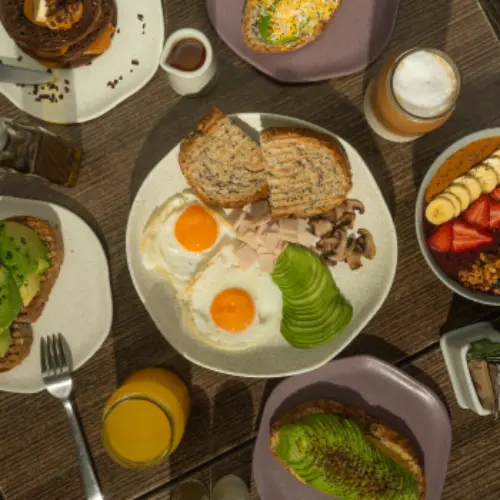
Healthy, light food with the best salads. Your spot if you're passing through, with friends, on a diet, vegan, vegetarian, or want to work remotely. I recommend the juices, the hot chocolate, the vegan chocolate cake, and the Thai salad.
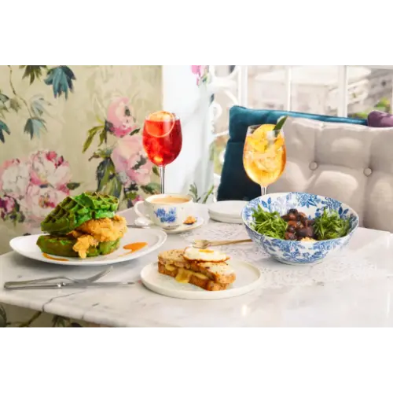
A gorgeous tea room, perfect for brunch or for celebrating something.
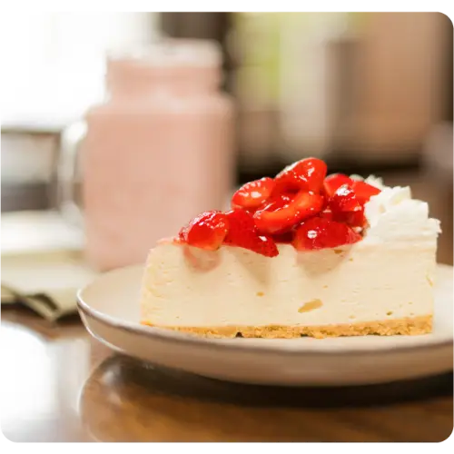
If it's your birthday, this is the place — it has the best cakes in the city. The menu works for any time of day, from breakfast to dinner. If you're going in a big group, I'd recommend booking ahead.
If you've already made your way through this list and want more ideas, these Lima food guides have even more recommendations for your next outing:
A Peruvian food and culture magazine, with restaurant reviews and rankings.
A blog with guides and recommendations for the best restaurants in Lima.
Guides on where to eat and drink in Lima, written by food lovers.
Restaurant recommendations and places to eat around the city.